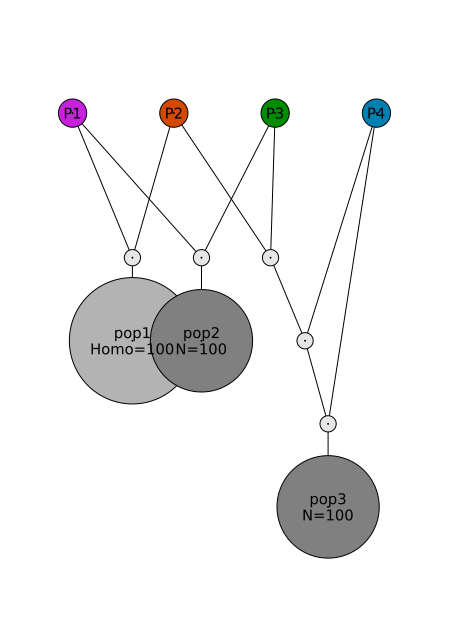
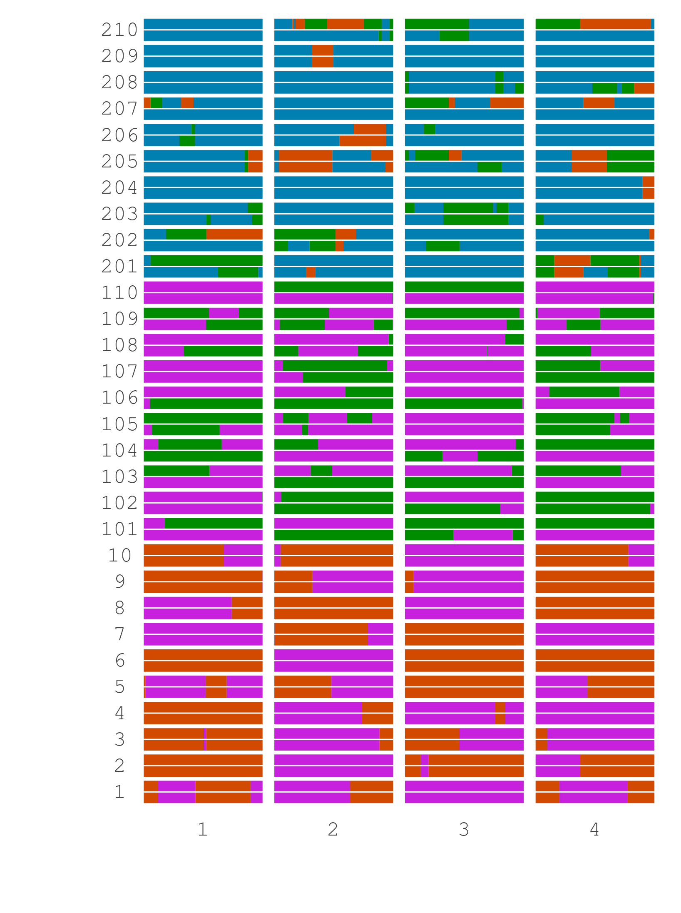
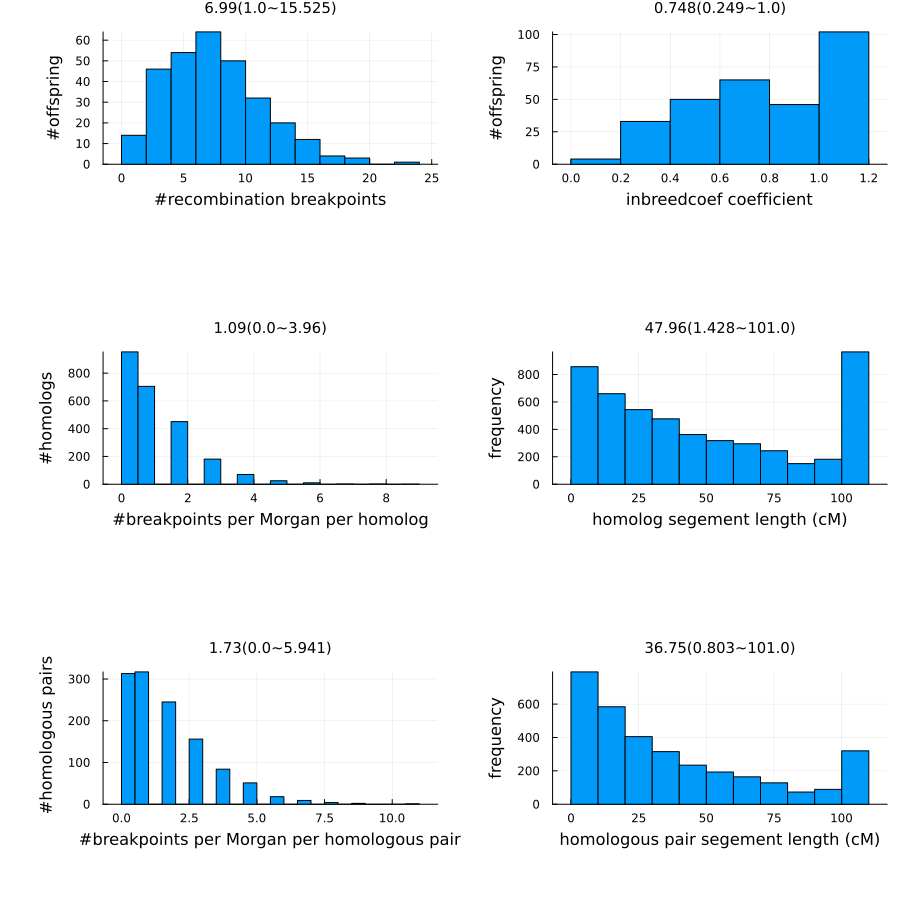

S1 MagicSimulate
Data Simulation
Set the working directory to the directory of this file. All functions that have keyarg outstem (or outfile) have keyarg workdir, and by default workdir is the current directory (pwd()).
# code for Julia
cd(@__DIR__) For using RABBIT in CLI, use command cd WORKDIR for changing directory to the WORKDIR containing input files.
Simulate founder data
Simulate genotypic data for 4 inbred founders with 400 markers randomly distributed over 4 chromosomes; each chromosome has length 100 cM.
# code for Julia
using MagicSimulate
outstem = "example"
fhaplofile = outstem*"_fhaplo.vcf.gz"
simfhaplo(;
isfounderinbred = true, # default
nsnp=400,
nparent=4,
chrlen=100*ones(4),
outfile=fhaplofile
)For running RABBIT in CLI, use command cd WORKDIR for change directory to the WORKDIR containing input files.
# code for Linux shell.
# For Window CMD, replace multiline key \ by ^, and replace comment-key # by ::
julia rabbit_simfhaplo.jl --isfounderinbred true --nparent 4 \
--chrlen "[100,100,100,100]" \
--nsnp 300 \
-o example_fhaplo.vcf.gzSimulate pedigree information
Simulate a breeding pedigree: 3 subpopulations (DH, F2, and three-parent cross) with equal size 100.
# code for Julia
using MagicBase
magicped = generate_magicped(;
designcodes=["P1/P2=>DH", "2ril-self1", "P4/3/P4//P2/P3=>1"],
founders = ["NA","P1||P3","NA"],
subpopsizes=100*ones(3)
)
savemagicped(outstem*"_ped.csv", magicped)# code for Linux shell.
# For Window CMD, replace multiline key \ by ^, and replace comment-key # by ::
julia rabbit_generate_magicped.jl --designcodes "[P1/P2=>DH, 2ril-self1, P4/3/P4//P2/P3=>1]" \
--founders "[NA, P1||P3, NA]" \
--subpopsizes "[100,100,100]" \
-o exampleSimulate offspring data
Simulate genotypic data for the example connected multiparental population. If ispheno=true, simulate phenotypic values with a specified heritability and the number of QTLs underlying the trait.
# code for Julia
using MagicSimulate
using Distributions
pedfile = outstem*"_ped.csv"
magicsimulate(fhaplofile,pedfile;
seqfrac = 1.0,
seqdepth = Gamma(2,5),
foundermiss = Beta(1,9),
offspringmiss = Beta(1,9),
foundererror = Beta(1,19),
offspringerror = Beta(1,19),
allelebalancemean = Beta(5,5),
allelebalancedisperse = Exponential(0.05),
ispheno = true,
pheno_nqtl=1,
pheno_h2= 0.5,
isplot = true,
outstem
)# code for Linux shell.
# For Window CMD, replace multiline key \ by ^, and replace comment-key # by ::
julia rabbit_magicsimulate.jl -g example_fhaplo.vcf.gz \
-p example_ped.csv \
--seqfrac 1.0 \
--seqdepth Gamma(2,5) \
--foundermiss Beta(1,9) \
--offspringmiss Beta(1,9) \
--foundererror Beta(1,19), \
--offspringerror Beta(1,19) \
--allelebalancemean Beta(5,5) \
--allelebalancedisperse Exponential(0.05) \
--ispheno true \
--pheno_nqtl 1 \
--pheno_h2 0.5 \
-o exampleOutput files
| outfile | Description |
|---|---|
| outstem*"_magicsimulate.log" | log file |
| outstem*"_magicsimulate_pheno.csv" | simulated observed phenofile |
| outstem*"_magicsimulate_geno.vcf.gz" | simulated observed genofile |
| outstem*"_magicsimulate_ped.csv" | simulated pedfile |
| outstem*"_magicsimulate_truecontfgl.csv.gz" | simulated true inheritance pattern in continuous form |
| outstem*"_magicsimulate_truecontfgl_mosaic.png" | plot genomic mosaic pattern (isplot=true) |
| outstem*"_magicsimulate_truecontfgl_recom.png" | plot distribution of #breakpoints (isplot=true) |
| outstem*"_magicsimulate_truefgl.csv.gz" | simulated true inheritance pattern at each marker |
| outstem*"_magicsimulate_truegeno.csv.gz" | simulated true genofile |
| outstem*"_magicsimulate_truepheno.csv" | simulated true phenotype values |
Output: pedigree
outstem*"_magicsimulate_ped.csv" differs from the input pedfile by transforming the designcodes into pedigree format. outstem*"_magicsimulate_ped.png" gives the plot of pedigree.

Output: mosaic
outstem*"_magicsimulate_truecontfgl_mosaic.png" plots genomic mosaic pattern for up to 3 offspring per subpopulation.

Output: #breakpoints
outstem*"_magicsimulate_truecontfgl_recom.png" plots distribution of #recombination breakpoints.
